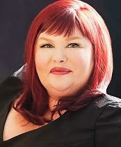

Кассандра Клэр
 Кассандра Клэр (англ. Cassandra Clare; настоящее имя — Джудит Румельт (англ. Judith Rumelt); род. 31 июля 1973, Тегеран, Иран) — американская писательница. Наиболее известна как автор серии книг «Орудия смерти» и её приквела «Адские механизмы».
Биография
Кассандра Клэр родилась в американской семье, проживавшей в Тегеране. Отец писательницы — известный американский учёный, специалист по корпоративной стратегии Ричард Румельт. Дед со стороны матери – продюсер фильмов ужасов Макс Розенберг. Ещё не достигнув возраста 10 лет, она успела побывать во Франции, Англии и Швейцарии. Кассандра окончила школу в Лос-Анджелесе. В старших классах она начала писать истории, преимущественно для развлечения одноклассников.
Со студенческих лет она жила в Лос-Анджелесе и Нью-Йорке, где подрабатывала в различных журналах и изданиях, включая крупнейший журнал о кино The Hollywood Reporter. Она начала работу над своим романом «Город костей» в 2004 году, вдохновлённая городским пейзажем Манхэттена.
Клэр дружит с писательницей Холли Блэк, вместе с которой написала некоторые рассказы и серию «Магистериум». Также писательницы не раз упоминали персонажей книг друг друга в своих произведениях.
В настоящий момент Кассандра Клэр живет в Амхерсте, штат Массачусестс, вместе со своим мужем Джошуа Льюисом и тремя кошками.
Творчество
До выхода в свет книги «Город костей», Клэр была известна своими фанфиками под схожим псевдонимом Cassandra Claire. Главные её работы — «Трилогия о Драко» (англ. The Draco Trilogy, по «Гарри Поттеру») и «Секретные дневники Братства Кольца» (англ. The Very Secret Diaries, по «Властелину колец»). Клэр считалась популярной личностью в фэндоме, её имя появлялось в нескольких газетных статьях. Например, «Трилогия о Драко» описывалась в газете The Times как «жемчужина такого высокого качества, которая приумножает ценность книг о Гарри Поттере», а The Telegraph назвала «Секретные дневники» «культовой классикой». Тем не менее время Клэр, как писателя фанфиков, подошло к концу, когда её обвинили в плагиате «Трилогии о Драко».
Клэр частично заимствовала свой псевдоним из произведения Джейн Остин «Прекрасная Кассандра», которым она воспользовалась при написании эпической поэмы в студенческие годы.